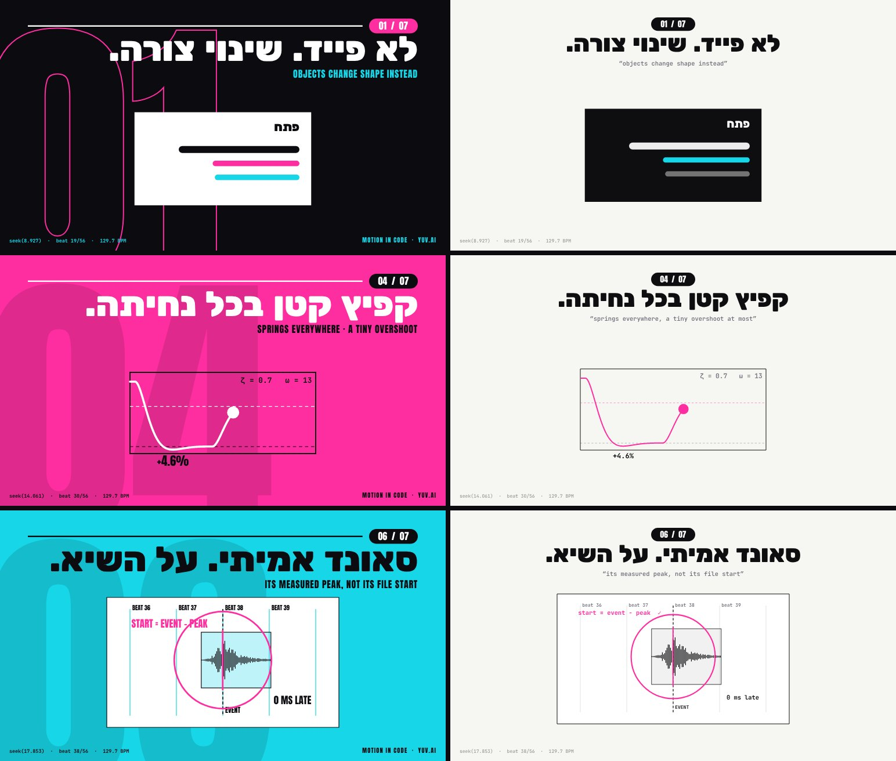

Video
that is code.
How Claude makes studio-grade launch films, without After Effects
seek(t) → Playwright → ffmpeg · 60 fps · on the beat
▶Watch the three filmsCatalog: what you can ask forThe video below is not a video file. It's a small program that draws it in real time, frame after frame, from a single number: time. Just like @twoclipping's videos, only smaller. Press Play, drag the scrubber to any point, and then we'll take it apart together, from the ground up, crumb by crumb.
The beat ruler under the picture: every line is a beat (half a second, because the song runs at 120 beats per minute), and the orange line is "the drop", the moment the music explodes. The music and effects here are synthesized in the browser for this demo only. The original method calls for real sound (and we'll see why).
The film: 27 seconds, 60fps, made entirely with this method
One HTML file and one function of time. Every frame was captured with Playwright, the film was assembled with ffmpeg, and the music and effects are real, each one placed according to its measured peak.
A lesson that isn't in the article: same motion, two art directions
The first version (on the right) worked technically: same timing, same springs, same sound. And yet it looked "anemic". The second version (on the left) didn't move the timing by a single second. It changed only the visual language:

- A full-color page that changes on the first beat of every bar (black, cyan, magenta), instead of one fixed pale paper. The change is a hard wipe led by a stripe of color, not a fade.
- Magazine-scale typography: a Rubik 900 headline at 150px, anchored to the right (the film is in Hebrew, which reads right to left), instead of 104px in the center. Subheads in Anton instead of a thin mono.
- Giant folio numbers (big section numbers, 01–07) that bleed past the edges of the frame. It's a layer of depth with no extra content at all.
- Thick lines (4–9px) and no gray: every color on screen is a brand color.
Next step: YUV.AI MOTION, the same method at full scale
A 33-second launch film for a fictional product that turns any topic into a launch video. It's built with the kit that came out of this work, and not a single frame in it comes from editing software:
- An input box with a neon glow that pulses on the beat.
- Typing in sixteenth notes (four keystrokes per beat), with the camera following the cursor.
- A click that bursts into a card, which lands in a 3D carousel that stops on every beat.
- An iPhone, and a MacBook whose lid opens on the beat, with code being written on the screen in real time.
- A time-lapse of the sky going from day to sunset.
Even the sea, the clouds and the sun are code: three.js and a shader, running on the same seek(t) clock. The code is open in the /kit folder.
And now a story: a product film for Ketzev, a fitness app
A launch film isn't a list of features. Ketzev (Hebrew for "rhythm"), a fictional fitness app, gets a film built like a real commercial: a problem the viewer can feel, a turning point, the product from the inside, people using it, proof, and why now. 40 seconds, 84 beats, and here too every frame is code:
- The problem: night, a couch, a phone. A calendar filling up with X marks, three notifications from apps that didn't work, and then everything shrinks into a dot that pulses like a heart and becomes the app icon.
- The drop: an iris (a circle that opens to reveal the next shot) onto a daytime sky, and the name lands on the beat.
- The product from the inside: the camera pushes into the screen, the feed scrolls on the beats, neon chips (small labels) explain each part, a tap turns a card into the next screen, and then a live workout screen.
- Working out: Noa does squats, and every rep lands on a beat and sends a "+1" to the counter on the phone. Daniel runs, Maya does push-ups, and the screen changes with them. The characters are drawn in code, with feet planted on the floor and arms driven by IK (inverse kinematics: the code places the hand, and the math works out the elbow and shoulder).
- Proof and why: a 30-day streak, a before-and-after chart, three reasons, and a download button with a glow.
The bottom line, without a single word of jargon
Five sentences. Everything else on this page is the proof behind them, broken down.
- Claude doesn't draw video. It writes software that draws every image in the video. A visual question ("make something beautiful") turns into a code question ("where is the button at second 4.2?"), and code questions are where Claude is excellent, precise and consistent.
- Taste isn't left to guesswork. zero's prompts don't say "make it pretty". They dictate exact colors, a font, and a long "don't" list of every cheap trick a model tends to reach for by default.
- No cuts, only changes of shape (morphs). A button doesn't disappear and get replaced by a page. The button itself grows and becomes the page. The eye follows the same object, and the brain reads it as one continuous, expensive-looking story.
- The music is the clock. First we measure the song (how many beats per minute, and when it explodes), and only then do we plan what happens on each beat. The motion "lands" on the rhythm because it was planned on the rhythm.
- Claude checks its own work before we see it. It captures stills, looks at them (it can read images), measures jumps and glitches as numbers, and only then renders. We give notes like a director, not like a programmer.
Who is @twoclipping, and what exactly did he publish
Facts with sources. Anything we couldn't verify is marked as such.
zero (@twoclipping on X) is a creator who blew up during the launch week of Claude Opus 5.5 (released September 22, 2026). His first post (one shape that morphs through a dozen interface states, on the beat) went up on September 24 and was measured at about 978,000 views and 11,900 likes (a different, later count: 933,000). Along with the videos, he published the full prompts and explicitly invited people to copy them ("steal it").
On September 28, 2026 he published a long article on X: "How I Make $10K Launch Videos for $0 with Opus 5.5 (Full Course)". That's the article this page is built on. It contains 6 steps, 3 full prompts and 7 "luxury rules". According to an independent summary of the article, it ends with a recommendation of a creator/affiliate network for distribution, a part that wasn't in the copy of the text we worked from.
| Prompt | Format | What makes it special |
|---|---|---|
| UI Morph (the viral one) | 1440×1440 · 0:14 · 120BPM | One shape that passes through 14 interface states, a perfect loop |
| Food ordering | 1920×1080 · 0:15 · 130BPM | A user story: request → result → action |
| "Develop": printing photos | 1440×1440 · 0:27 · 120BPM | "Liquid glass", a camera aperture, real footage; ~106K views |
| Beat-synced footage | 1920×1080 · 10 bars | Real clips synced to the beat, a 3D carousel |
| Landing-page fly-over (our starting point) | 1440×1152 · 14.5s | 3D WebGL, depth of field, a fast-moving camera |
The article, summarized step by step
Our summary of each step, in our own words, with a clear link to zero's full original on X. Every technical term is explained in parentheses the first time it appears.
How I Make $10K Launch Videos for $0 with Opus 5.5 (Full Course)
Published on X on September 28, 2026, less than a week after Claude Opus 5.5 was released, this article by zero (@twoclipping) open-sources his entire workflow for motion design (graphic animation: text, shapes and app screens that move, as opposed to filmed footage), the kind of launch video studios charge $5,000 to $15,000 for. What follows is our summary of each step. For his exact wording and his full prompts, read the original on X.
His headline claims: zero MCP (Model Context Protocol, a standard way to plug outside tools and services into Claude), zero external tools, no subscription to buy, and no After Effects (Adobe's professional animation software) or any other editing app. Claude builds the whole video in code. He frames it as zero effort on his side, says every single frame is code that Opus 5.5 wrote, and admits he doesn't know even the first step of motion design.
Step 1: Steal the idea
The first point: this part takes no creativity. Every video he made started from something that already existed, such as UI animations on Dribbble (a site where designers post their work), an Apple keynote or another company's app promo. So we save a launch video we like and give it to Claude Code (Claude running in a terminal or app, where it can run commands, write files and look at images). Claude pulls frames out of it with ffmpeg (a free command-line program that cuts, converts and assembles video and audio), lays them out on contact sheets (one image holding a grid of many small frames), maps what happens on each beat (a pulse of the music), how each scene flows into the next, the camera moves, the colors and the fonts, and then writes the same structure for our product. No reference? Ask Claude for three ideas and pick one. His style tip: by default Claude leans toward dark, 3D-looking videos that still don't feel premium, so he steers toward flat, white, minimal 2D, and adds a short style line to his prompts so it doesn't slide back.
Step 2: Turn Claude Code into a studio
The studio is a single setup prompt. Claude Code installs ffmpeg and Playwright (a library that drives a browser with no screen: it opens a page, runs code in it and takes screenshots) with Chromium (the open-source version of Chrome), then renders (produces the final images of) a two-second test, a circle that grows into a pill shape on a spring, at 60fps (60 frames per second), and shows us the first and last frame. That is the whole studio: Opus writes one HTML file with a function called seek(t) (t stands for time) that draws any frame on request, Playwright captures every frame, and ffmpeg turns them into an MP4. Because it's all code, when something looks wrong we just tell Claude, and it fixes only that part.
Step 3: Get the assets, all for free
All the raw material is free: music from Mixkit's free music library, sound effects from Mixkit's free sound effects, footage and photos from Pexels, fonts from Google Fonts, plus our own screenshots and logo. We don't even download them ourselves. Claude Code fetches a royalty-free track around 120 BPM (beats per minute) with a clear drop (the moment a song bursts open after a build-up), analyzes it with numpy (a Python library for number crunching) to get the beat map (the exact time of every beat) and the exact time of the drop, then downloads one sound effect per on-screen event and measures where each one peaks (reaches its loudest point). His rule: always use real sound effects. When he let Claude make its own, they sounded cheap.
Step 4: The prompts
Next he shares the exact prompts behind three demo films: a 15-second launch film for a food-ordering app (16:9), a 27-second Apple-style keynote for a photo-printing app (square), and a 14-second looping UI morph in which one shape travels through 14 interface states. We paste one into Claude Code running Opus 5.5, and Claude first asks us for what it needs. All three share one skeleton: what to ask us for, how it should look, what happens when, and the mistakes to avoid. He is upfront that these are not real launches, only demos of what Opus can do, and claims that once remixed with our own product and assets, the result can't be told apart from a $15,000 launch video. We don't reproduce the prompts here; they are in his original article. They lean on terms like closed-form springs (bouncy motion calculated straight from a formula for any moment, instead of simulated step by step), zooming in log space (a zoom where every doubling of size takes the same time, so it feels steady to the eye) and subframes (extra in-between images blended into each frame to create motion blur). Each one gets its own section further down this page, with an interactive lab.
Step 5: What makes it look expensive
His warning: unless these rules are spelled out, the film looks like a PowerPoint deck. In short: nothing fades in (slowly appears out of transparency); things morph instead (one shape smoothly reshapes into the next), like a button that grows into the next screen. There are no cuts, so every scene grows out of the one before. Something happens on every beat of the song. Objects bounce a little as they land, like physical things. The camera makes one move at a time. Every click and whoosh has a real sound. And Claude checks its own work before we see it.
Step 6: Wrap it up
Once we like the plan, we ask for the final render: 60fps with motion blur (the natural smear a real camera puts on fast-moving things), every sound effect placed exactly on its moment, balanced audio, and a check of every frame for glitches before Claude shows us anything. Then we watch and give notes like a director, not like a programmer: this part drags, that fade looks cheap so turn it into a morph, land the zoom on the drop. In his experience, two or three rounds of notes and we're done.
Read zero's original article on X for his exact wording and the full prompts.
Foundations: what is "video", anyway?
Before any trick: what the thing itself physically is.
Video is a sequence of still images (stills) shown very quickly, one after another. Each of these images is called a frame. The eye and the brain can't keep up with the "jumps" between images, so they stitch them together into continuous motion, like a flipbook.
FPS (frames per second) = how many images are shown each second. At 60fps each image stays on screen for 1/60 of a second ≈ 16.7 milliseconds. Why 60 and not 30? Because most screens refresh 60 times per second, and in fast motion (a button growing, a camera pushing in) at 30fps every step is twice as big, so the eye starts to notice "stairs". The price: twice as many images to produce.
Notice what just happened: you jumped to frame 240, and the image appeared instantly, without "playing" the 239 frames before it. That's not obvious at all, and it's the heart of the whole method. To understand why, we first need to understand what a language model is good at.
The core trick: turn a pixel problem into a code problem
Why this works with a language model specifically, and why now.
There are two completely different ways AI can "make video":
Path A: a video model (Veo, Sora, Flux Video)
The model generates pixels directly: it "guesses" what the next image should look like, based on statistics from millions of videos. Excellent for realistic footage. Bad at anything that demands precision: correct text, an exact brand color, a button that stays the same button, timing to the millisecond. And there's no way to "fix just the fourth second": we generate again and everything changes.
Path B: a language model that writes code (this method)
Claude doesn't generate a single pixel. It writes software (a web page) that draws every frame. The text is exact because it's real text. The color is exact because it's #FF8F3A. And if the fourth second isn't good, we change three lines of code, and the rest of the film stays identical, down to the byte.
Why is this such a good fit for an LLM (large language model)? At its core, a language model is a machine that writes text, and code is text with sharp rules. When we turn "make a beautiful animation" into "write a function that returns the button's width at time t", we move the task out of the area where the model is weak (visual guessing) and into the area where it's strongest (precise, long, consistent code). Why did this break out with Opus 5.5 specifically? There's no direct benchmark for "motion ability", but what the community points to is an unusually good sense of timing and rhythm, together with two things the method requires: writing and maintaining a long code file without breaking it, and seeing images.
| Video model | Rendered code (zero) | |
|---|---|---|
| Exact text and logo | Unreliable | Pixel-perfect |
| Spot fix ("just second 4") | Regenerate everything | Change one line |
| Sync to music | Approximate | To the millisecond |
| Same result on every run | No | Yes (deterministic) |
| Realistic footage, people, nature | Excellent | Only with real footage we bring in |
And this is where seek(t) comes in: the way "software that draws a frame" has to be built for any of this to work.
seek(t): every frame is a pure function of time
The most important technical rule in all the prompts: "no CSS transitions, no timers, no state between frames".
A function is a machine: a value goes in, a value comes out. A pure function is one where the same input always gives the same output, and that doesn't depend on anything else: not on the computer's clock, not on what happened before. seek(t) takes a time t in seconds (say, 4.2) and draws the screen exactly as it should look at that moment. From nothing. Without remembering anything.
<div id="dot"></div>
<script>
const spring = (t, w = 12, z = 0.8) => { if (t <= 0) return 0;
const wd = w * Math.sqrt(1 - z*z);
return 1 - Math.exp(-z*w*t) * (Math.cos(wd*t) + (z*w/wd) * Math.sin(wd*t)); };
window.seek = (t) => { // t in seconds. Nothing else.
const grow = spring(t - 0.5); // starts growing at 0.5s
const w = 44 + (380 - 44) * grow; // circle (44px) -> pill (380px)
dot.style.width = w + 'px';
dot.style.borderRadius = '999px';
};
seek(0);
</script>Why not just run a regular animation and record it? Because a regular animation (a CSS transition, setTimeout, requestAnimationFrame) reads the real clock: "300 milliseconds have passed since I started, so I'm at 30%". But when we render, a single Playwright screenshot takes a variable amount of time: sometimes 40 milliseconds, sometimes 200. The clock keeps running during the screenshot, so every frame gets "caught" at a random moment. When we play the images back at a steady 60fps, the motion stutters, speeds up and slows down. With seek(t) we tell the page "be at t=4.2", wait as long as it takes, take the screenshot, and the next t is exactly 4.2 + 1/60. The film's time is completely decoupled from the computer's time.
What you saw in the graph: the seek(t) line is perfectly straight (every frame advances exactly 1/60 of a second), while the timer line is jagged and jumpy, because each frame gets "caught" after a different screenshot time. And here are three more gifts seek(t) gives us:
- Jump to any moment: Claude can capture just frame 240 to check the drop, without rendering everything.
- Parallel rendering: 7 browsers can render 7 different parts of the film at the same time (as we did in EP04 on the RTX 4090), because no frame depends on the one before it.
- Surgical fixes: changing the scene at second 6 doesn't touch a single frame before it.
async seek(t). async = a function that's allowed to "wait" before it finishes, for example until an image or a video frame has loaded. Playwright waits for it to finish and only then takes the screenshot. Without it, we'd capture a frame where the image hasn't appeared yet.Easing: why "linear" motion looks robotic
The first layer of "taste", and what it looks like as numbers.
Say a button needs to move from point A to point B in one second. The simple way: at every moment, it has covered the same share of the distance as the share of time that has passed (50% of the time = 50% of the distance). That's called linear, and it looks mechanical, because nothing in the real world moves like that. A car speeds up, cruises, and slows down. A hand lifting a cup speeds up, then slows down before it reaches the table.
Easing is a function that converts "how much of the time has passed" (u, between 0 and 1) into "how much of the distance we've covered" (also between 0 and 1). No formulas yet. First, just look at the balls:
Now the formula, once we have a picture in our heads. easeInOutCubic (ease-in-out): for u below one half, 4u³ (it starts slowly, because u³ is tiny when u is small); for the second half, 1 − (−2u+2)³/2 (the mirror image: it slows down at the end). easeOutCubic (ease-out) = 1 − (1−u)³: it shoots off and then slows down, great for things that "land". easeOutExpo slows down to an extreme. It looks "fast and expensive", but overused it feels templated.
Closed-form springs: the secret behind the physical feel
"Springs are closed-form step responses": what each word means, and why it's done exactly this way.
Intuition first: picture a weight hanging from a spring, and we suddenly move the point it hangs from 10 cm down. The weight doesn't jump straight to the new spot: it accelerates toward it, overshoots a little, comes back, and settles. Two things determine how this looks:
- Stiffness (ω, "omega"): a stiff spring = fast motion. In units: the natural frequency, in radians per second. ω=12 → a natural oscillation period of 2π/12 ≈ 0.52 seconds.
- Damping (ζ, "zeta"): how much "friction" there is. ζ less than 1 → it overshoots the target and comes back (springy). ζ=1 → it arrives as fast as possible without overshooting (critical damping). ζ greater than 1 → it crawls, "muddy".
"Step response" = how the spring reacts when the target jumps all at once (a "step") from 0 to 1. "Closed-form" = there's a formula that gives the position at any time t directly, without simulating step after step. And that's the whole point: a step-by-step simulation has to remember the position and velocity from the previous frame (in other words, "state"), and that breaks seek(t) (there's no way to jump to frame 240 without computing the 239 before it). The closed-form formula gives us a spring that is a pure function of time.
x(t) = 1 − e−ζωt · ( cos(ωdt) + (ζω/ωd)·sin(ωdt) ), where ωd = ω·√(1−ζ²).•
e−ζωt: "the envelope". It fades over time, and how fast depends on damping times stiffness. This is what makes the oscillation die out.•
cos and sin: the oscillation itself (back and forth around the target), at frequency ωd, which is the natural frequency "slowed down" a little by the damping.• The term
(ζω/ωd)·sin is chosen so that at time 0 the velocity is exactly 0: the spring starts from rest, with no "kick".• The maximum overshoot falls straight out of the formula:
e−πζ/√(1−ζ²). ζ=0.8 → 1.5%. ζ=0.6 → 9.5%. And that's what the prompt means by "a tiny overshoot at most": damping of roughly 0.75–0.9."The sum of one spring per change": how the target changes midway
In the prompt: "A value with many targets is the sum of one spring per change, so it stays a pure function of time." Check the "Three targets in a row" box in the lab. The width starts at 44, at 0.0 seconds it gets a target of 380, at 0.35 it changes its mind to 200, and at 0.7 to 300. Instead of remembering "where I was", we compute: value = 44 + (380−44)·spring(t) + (200−380)·spring(t−0.35) + (300−200)·spring(t−0.7). Each change adds its own spring, which starts at the moment of that change. Since every spring starts at velocity 0 and position 0, the sum is continuous (no jump), and the result is still a pure function of t.
The "liquid indicator" trick: two edges, two springs
In the UI morph prompt: "The tab indicator's two edges ride different springs, so the leading edge stretches ahead of the trailing one." The bar that marks the selected tab isn't one object that moves: it's two numbers, the right edge and the left edge. If the edge facing the direction of travel gets a stiffer spring than the trailing edge, the bar stretches along the way and contracts when it arrives, just like a drop of water. Click the tabs:
Change shape instead of disappearing: morph vs. fade
Rules #1 and #2 in "what makes it look expensive", and why they work on the brain.
Fade (crossfade) = the old image turns transparent while the new one appears. In the middle, both are half-transparent, one on top of the other. Morph = the very same object changes its width, height, corners and color until it becomes the next thing.
Why the brain prefers a morph: our visual system is built to track objects over time (object permanence). When the button itself grows into a page, the eye never loses it for a moment, so the brain reads cause and effect: "I clicked, and this thing opened". In a fade, there's a moment where the eye sees two half-transparent things and doesn't know which one to focus on. The causal link breaks, and the result feels like "the next slide" in a presentation. Hence "it looks like a powerpoint".
seek(t) grows into a card, and the orange button on that card is the one that floods the screen on the drop. It's not a color appearing out of nowhere.The camera: one transform, and zoom "in log space"
"The camera is one transform on a container... zoom interpolated in log space."
There's no real camera in a web page. The "camera" = one box that wraps the whole world, and we apply movement and scaling to it (a transform). Scaling the box 2× around a point = "zooming in 2× on that point". All of the camera's motion is a short list of keyframes (moments where we pin down exactly where the camera is), [time, zoom, x, y], with easing in between.
Why "logarithmic"? Zoom is multiplicative: going from 1 to 2 is "2×", and going from 2 to 4 is also "2×", and the eye experiences both as the same distance. If we compute the zoom linearly from 1 to 16, then halfway through the time the zoom is 8.5, meaning we've already covered 8.5× out of 16×. The eye feels a crazy surge at the start and a crawl at the end. In log space (z = a·(b/a)u, where a is the starting zoom, b the final zoom and u the fraction of time that has passed), halfway through the time the zoom is 4 = √16: half of the perceived distance. The speed the eye experiences is the rate of change of ln(z) (the logarithm of the zoom), and that's exactly what the graph below measures.
- "one move per scene": one camera move per scene. Two moves at once (say, a zoom plus a pan, which slides the view sideways, in another direction) = the eye doesn't know where to look.
- "never zooms in and out back to back": zooming in and immediately zooming out looks like a camera that couldn't make up its mind. In the film above, the camera pushes in before the drop, and it makes the return to 1 while the orange flood covers the entire screen. A camera change over a solid-color surface is invisible. It's a classic editing trick.
- "Never put will-change on anything the camera scales":
will-changetells the browser "snapshot this element as an image and move the image around". When we scale up an image like that, the text goes blurry. Without it, the browser redraws the text at every size, so it stays sharp.
The music is the clock: BPM, beats, the drop and peak-aligned sound
"Something happens on every beat", and how a computer "hears" the beat.
BPM (Beats Per Minute) = how many beats in one minute. 120 BPM = 2 beats per second = a beat every 0.5 seconds. Bar = 4 beats. Downbeat = the first beat of the bar, the strong one. The drop = the moment when, after a build-up, all the instruments come in at once: the peak of the energy.
Once we know the BPM, planning the whole film becomes a table: on beat 0 this happens, on beat 1 that happens. That's why the prompts talk in beats, not seconds. We checked zero's numbers, and they're accurate:
How numpy "hears" the rhythm, step by step
The prompt says "Analyze it with numpy and give me the beat grid". Here's what happens under the hood (we run exactly this algorithm right here in the browser, on a song synthesized on the spot):
- What an audio file is: a long list of numbers between −1 and 1, the position of the speaker's membrane. 22,050 numbers for every second.
- Energy envelope: we cut the audio into windows of 256 samples (~12 milliseconds) and compute the RMS (root mean square) of each window = "how loud" that window is.
- Onset ("the start of a sound"): for each window, how much louder it is than the one before (rises only). A drum strike = a sharp jump. This turns the song into a list of "hits".
- Autocorrelation: we slide the list of hits over itself at different offsets and check where it "lines up" with itself best. If there's a hit every 0.5 seconds, the 0.5-second offset gives the highest match → 120 BPM. (We favor tempos close to 120, because otherwise the algorithm might pick half or double the real tempo.)
- Phase: now we know how often, but we also need to know when. We search for the starting offset where the grid lands on the most hits.
- The drop: we compute the average energy of each beat and look for the beat with the biggest jump compared with the two beats before it.
Sound effects placed "by measured peak": the small detail that makes the difference
In the prompt: "Place each so its measured peak, not its file start, lands on the event." A "whoosh" file starts quiet and rises to a peak, the moment the ear hears as "there it is!". In our file the peak sits 0.42 seconds after the start of the file. If we play the file right at the drop, the peak arrives 0.42 seconds after the drop. That's almost a full beat late, and the ear feels that something isn't "landing". The fix: measure where the peak is, and start the file at event time − peak time.
loudnorm is an ffmpeg filter that brings the whole film to a fixed, measured loudness. −14 LUFS is a common target for streaming platforms: that way our film won't sound quieter than everything else in the feed, and it won't get "turned down" automatically either.Motion blur from subframes: why 4 leaves "ghosts" and 8 doesn't
"8 subframes per frame blended with ffmpeg tmix": every word, every number.
The problem: a real camera opens its shutter for a stretch of time (for example, half of the frame's duration, known as a "180° shutter"). Anything that moves during that time gets smeared across the image. That smear is "motion blur", and our brains are so used to it that without it, fast motion looks "stuttery" and artificial. But a browser screenshot is a single, infinitely short instant: zero smear.
The fix: for every final frame, we capture N "subframes" at closely spaced times inside the shutter window and compute their pixel-by-pixel average. The average of 8 nearby positions of a circle = a smeared circle. ffmpeg tmix is exactly that: a filter that averages N consecutive frames.
Why 4 isn't enough for fast motion: the distance between two subframes is speed × shutter time ÷ N. If that distance is bigger than the object itself, the copies don't touch each other, and we see 4 separate see-through copies: "ghost copies". The prompt says "use 8 and slow the move down". Those are the two ways to shrink that same number.
And the ffmpeg command. We actually tested it before writing it here: we generated 24 synthetic subframes and verified that every output frame is the average of its own 8 subframes and doesn't mix in its neighbors:
# 60 fps × 8 subframes = 480 images per second of film ffmpeg -framerate 480 -i sub_%06d.png \ -vf "tmix=frames=8,select='eq(mod(n\,8)\,7)',setpts=N/(60*TB)" \ -r 60 -c:v libx264 -pix_fmt yuv420p -crf 16 video.mp4
tmix=frames=8 averages each frame with the 7 before it. select='eq(mod(n,8),7)' keeps only every eighth frame: the one whose average covers exactly one complete group. setpts rewrites the timestamps for 60fps. A gotcha from Howseen's skill: never average across a hard cut (an instant switch from one scene to the next), or the two scenes smear into each other.
"It checks its own work": quality control Claude does on its own
The seventh rule, and the reason the result doesn't look like "one prompt and a prayer".
Every one of zero's prompts ends with a <start> block that requires, before writing the full film, a beat map and 4 stills for approval. And after the render, two checks: one frame per beat, and a scan for "pops".
Check 1: a contact sheet, one frame per beat
This is exactly what Claude "looks" at. Here's the sheet for the film above, computed right now from that same seek(t), with one frame every half second:
Check 2: the pop scan, catching a one-frame glitch
A pop = a single frame where something jumps to the wrong place and immediately snaps back (a layer that showed up too early, a variable that wasn't set). At 60fps the eye catches it as an annoying "flicker", but it's very hard to find by watching. The algorithm: for every pair of consecutive frames, we compute the average difference between their pixels. In smooth motion, that difference changes slowly. A pop creates a spike, 3x or more above its neighbors, exactly as the prompt puts it: "frame-difference spikes 3x their neighbours".
The full pipeline: from an HTML file to an MP4
Now that every part is defined, we can see the whole chain.
import { chromium } from 'playwright';
const FPS = 60, SUB = 8, SHUTTER = 0.5, DUR = 9; // seconds
const browser = await chromium.launch({ args: ['--use-angle=d3d11', '--enable-gpu', '--ignore-gpu-blocklist'] });
const page = await browser.newPage({ viewport: { width: 1920, height: 1080 } });
await page.goto('http://localhost:8000/film.html');
await page.evaluate(() => document.fonts.ready); // never shoot before fonts load
let i = 0;
for (let f = 0; f < DUR * FPS; f++) {
for (let k = 0; k < SUB; k++) { // subframes spread across the shutter
const t = f / FPS + (SHUTTER / FPS) * ((k + 0.5) / SUB - 0.5);
await page.evaluate(t => window.seek(t), t); // may be async (images, video)
await page.screenshot({ path: `out/sub_${String(i++).padStart(6, '0')}.png` });
}
}
await browser.close();The numbers on the buttons come from our real renders in this project: in the cloud environment (CPU only) we got about 7 frames per second; on my RTX 4090, with 7 workers (browser copies rendering side by side) running in parallel, about 6 per second each. Subframes multiply the work, so for drafts we render without motion blur and at low resolution, and save motion blur for the master.
Anatomy of the prompt: the six blocks, and why each one works on an LLM
All of zero's prompts are built on exactly the same skeleton. Click a block.
Bonus: the 3D fly-over prompt
Exactly the same skeleton, but here zero breaks his own "2D only" rule, on purpose.
Full prompt + explanation
What's new here compared with the previous three prompts:
1. A camera driven by speed, not by positions
"Drive the camera from one speed curve, never from a position key every half second... Integrate it into the page position." Instead of telling the camera "at 0.5 seconds be at y=300, at 1.0 be at y=700", we define how fast it travels at every moment, and add up (integrate) that speed over time to get the position. Why? Because when we connect fixed positions with a smooth curve, the speed between the keys turns "wavy": it speeds up and slows down around each key. The eye reads this as a glide that stalls and lurches ("stops or surges in the glide" is on the banned list). When we start from the speed, it stays exactly as flat as we defined it.
2. Asymmetric depth of field
"blur radius = 75 × (focus − depth) / depth in front of the focus and 6 × (depth − focus) / depth behind it, capped at 120px". Depth of field = how much of the image is sharp. In a real lens, things very close to the lens blur much faster than things far away, and that's what gives the "macro" feel of an expensive miniature. The multiplier of 75 in front versus 6 behind (12.5 times more) creates exactly this: the page near the lens "melts", while whatever sits behind the focus stays almost sharp.
3. Three engineering details that explain "why does mine look cheap?"
- Mipmaps + 16x anisotropic filtering: A texture (here, the image of the page) seen at a steep angle and from far away gets squeezed into far fewer pixels than it actually contains. Without preparation, each frame "samples" different pixels, so distant text flickers (shimmer). Mipmaps = pre-shrunk versions of the image, made in advance. Anisotropic filtering = sampling that understands the image is stretched more in one direction than the other (because of the angle).
- "drawn lowest first with no depth buffer": We draw from the lowest layer up to the highest, like a painter who paints the background first (the "painter's algorithm"). No depth buffer (the GPU's per-pixel record of what is closest to the camera), because the layers are partly transparent, and a depth buffer can't handle transparency.
- "fade them into the haze colour first": A card that turns transparent reveals whatever is behind it, and in 3D that looks like a "ghost". So first we tint it to the background's haze color (it "dissolves" into the air), and only at the very end cut it to transparent.
--use-angle=d3d11) and 16 subframes per frame, which means rendering on a local PC, not in the cloud. 14.5 × 60 × 16 = 13,920 captures (seconds × fps × subframes). (2) It starts with "open my link": it captures the real landing page, so any change to a section's height on that page shifts all the timing ("lock the page before timing anything").What we can learn from this, including what's overstated
The method is excellent. Its headline, less so.
| The claim | What's true | What's overstated / missing |
|---|---|---|
| "$0" | No need for After Effects or paid stock footage. | Claude itself costs money (a subscription or tokens). One source reports ~90K input tokens + 15K output tokens per film ≈ $0.66 at list price. That's for one film, before revision rounds, rendering and the time we put in. |
| "0 effort" / "I don't know step 1 of motion design" | No animator's hands needed. | The prompts are packed with deep professional knowledge (180° shutter, logarithmic zoom, closed-form springs, LUFS). The knowledge didn't disappear: it moved into the prompt. Change the prompts without understanding them, and they break. |
| "One prompt" | One prompt drives the process. | In practice: reference → assets → beat map → stills → render → 2–3 rounds of notes. Another creator (@rexan_wong) who examined videos like these also concluded that "one prompt" is really a workflow. |
| "You can't tell it from a $15K video" | The demos really are high quality. | These are demos in one style he likes (2D, white, Apple-like). A studio also sells strategy, copy and a client process. The claim is his; nobody measured it. |
| "It's all free on Mixkit/Pexels" | Both have large free libraries. | Mixkit has a separate license for each type of item (music, SFX, "free" vs. "restricted" video). Pexels has restrictions on identifiable people and brands. Check every file before any commercial use. |
How we're adopting it from now on: the YUV.AI Motion Method
What we already have from EP01–EP06 (our first six episodes), what changes, and our prompt.
| Part | What we've done so far | From now on |
|---|---|---|
| Engine | Paused GSAP timeline / render(t) (EP01, EP04) | Same idea, but with closed-form springs and a strict "zero state" rule. A paused GSAP timeline is fine, as long as there are no timers |
| Clock | The voiceover's word timings (Scribe/Whisper) | Two clocks: the voiceover for captions, the beats for transitions. The main event lands on the drop |
| Transitions | Whip/slice/flash cuts (EP03) | Morph + shared element between scenes. Short captions with hard cuts stay: that's a separate layer |
| Camera | A punch-zoom on every cut (EP03 vertical) | One move per scene, logarithmic zoom, reset hidden under a flood |
| Sound | SFX placed at the start of an event; sometimes synthesized (EP02) | Real SFX, aligned by measured peak; ducking (the music dips) under the voiceover; −14 LUFS (already in place) |
| Motion blur | None | 6–8 subframes + tmix, in the master render only |
| QA | Contact sheets, audit.py for legibility | + a frame per beat, pop scan, right-to-left (RTL) check |
| Process | "Work to the end without asking" | One cheap gate: a beat map + 4 stills before the full film (can be auto-approved if nobody is available) |
Our prompt: zero's skeleton, adapted to Hebrew, right-to-left and our brand
yuv-motion) so there's nothing to paste. And before building from scratch, look at howseen-ai/claude-motion-design: an open-source skill (MIT license) built on the same principles, including render.py, a pop scan and drop detection, and inspired directly by zero's prompts. We can take its engine and put our own layer on top (Hebrew, RTL, brand, frame capture on our RTX 4090).Sources
All links were checked and live on October 15, 2026.